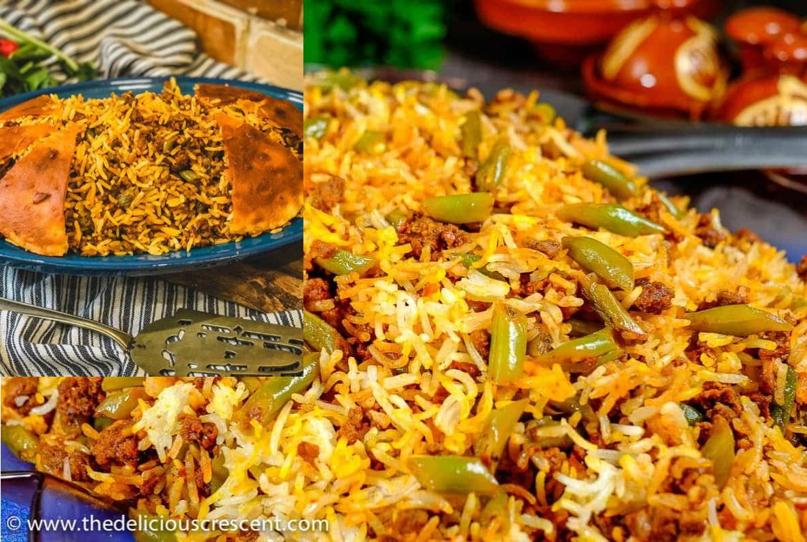

MAKING LUBIA POLO WITH SHIRAZI SALAD AND A SIDE OF DOOGH
By: Zainab Majidi
Lubia polo is the perfect rice combination with your preferred meat choice like Ground beef, lamb, beef, etc. in which it contains spices such as cinammon to go along with its gorgeous color. The best side with it some simple but yet, tasty Shirazi Salad. Lastly, what is a meal without a drink, therefore, we have doogh which is refreshing and cooling after a warm bite of Loubia Polo.

INGREDIENTS FOR LUBIA POLO:
- 2 tablespoon of olive oil
- 1 finely chopped onion
li> Basmati Rice
- 6 ounces ground beef
- 1 teaspoon turmeric
- 1 teaspoon curry powder
- 1 teaspoon cinnamon
- 1 1/2 teaspoon salt
- 3 tablespoon tomato paste
- ½ cup water
- fresh green bean cut into half or to your preffered size
- cinammon sticks
INSTRUCTIONS
- Heat the oil in a large pan over medium heat.
- Saute onion until golden brown, add the ground beef and cook until no longer pink. Add in turmeric, cayenne pepper, curry, cinnamon and salt to the ground beef and cook for a couple of minutes.
- Add in tomato paste and water. Mix well until everything is combined. Stir in the green beans and bring it to a low simmer. Cover and cook until the green beans are fully cooked. Add in more water if needed. Taste to make sure the flavors are there. Set the green beans and beef mixture aside.
- Bring a pot of water with the salt to a rolling boil. Wash the Basmati rice two to three times to discard excess starch.
- When the water starts boiling, add the rice and boil for about 6 minutes until the rice is par cooked or al dente. The rice is ready when you're able to break a rice grain into two pieces using your thumb and index finger, but the rice still has to be hard in the middle. The outer layer is soft but the grain is still hard in the middle.
- Turn the heat off and place a colander in the sink. Lift the pot and pour the rice into the colander and rinse it using cold water to stop the cooking process.
- Place the pot back on the burner and turn the heat to medium high. Once the bottom of the pot is dry, pour 3 tablespoon vegetable oil into the pot and arrange the potato slices so they cover the bottom of the pot.
- Scoop one third of the rice into the pot over the potatoes. Layer with some bloomed saffron and one third of the green bean mixture. Repeat until you're out of rice and filling, make sure the rice is shaped like a mountain, meaning you have more rice in the middle than around the edges.
- Pour ⅓ cup water around the edges, wrap the lid in a clean kitchen cloth/towel and place it on the pot (This is for the towel to absorb the steam, resulting in a fluffy rice).
- Turn the heat to medium high (but not too high) and cook the rice for about 15 minutes. Lift the lid to see the steam escape and then pour 3 tablespoon vegetable oil on the rice.
- Cover again and cook for another 30 minutes until the rice is fully cooked and the flavors are fully combined. Fluff the rice a bit to have the filling and rice mix completely.
- Serve with Salad Shirazi and plain yogurt sprinkled with dried mint.